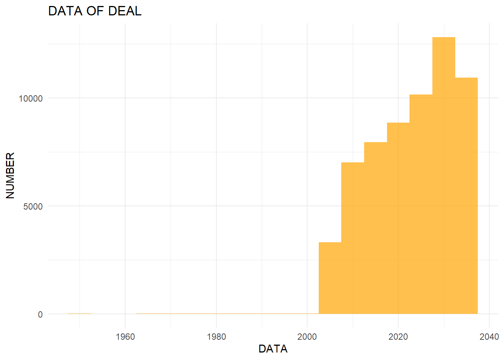
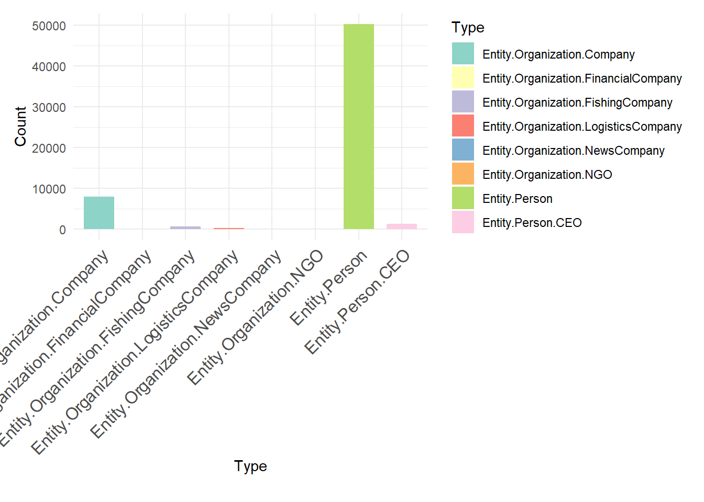
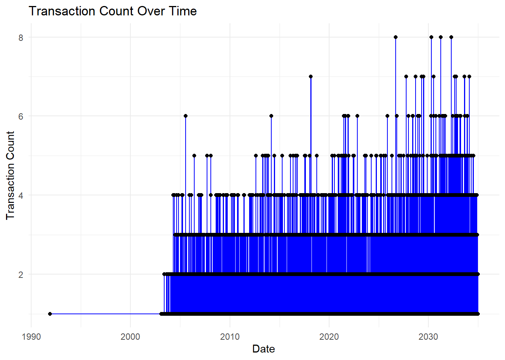
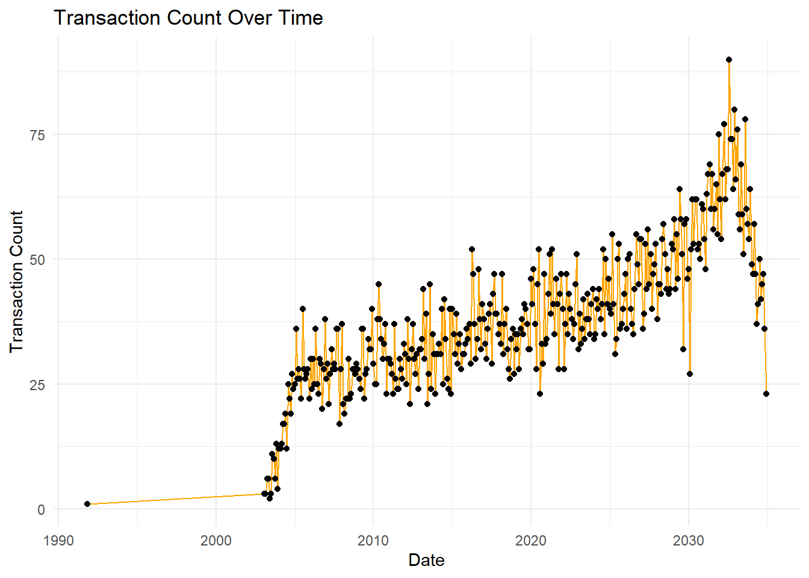
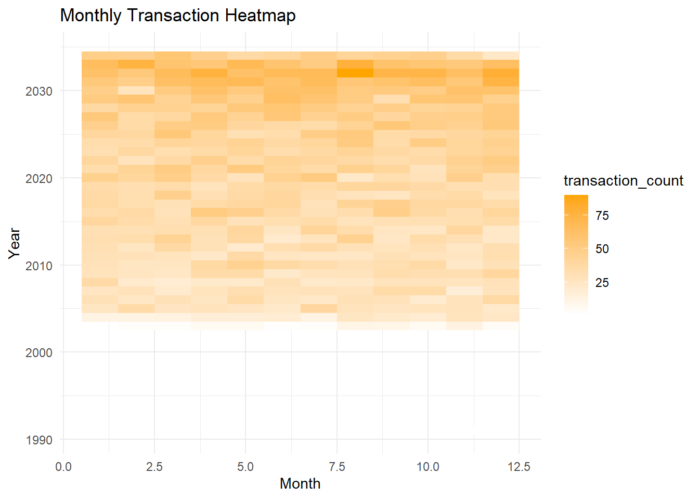
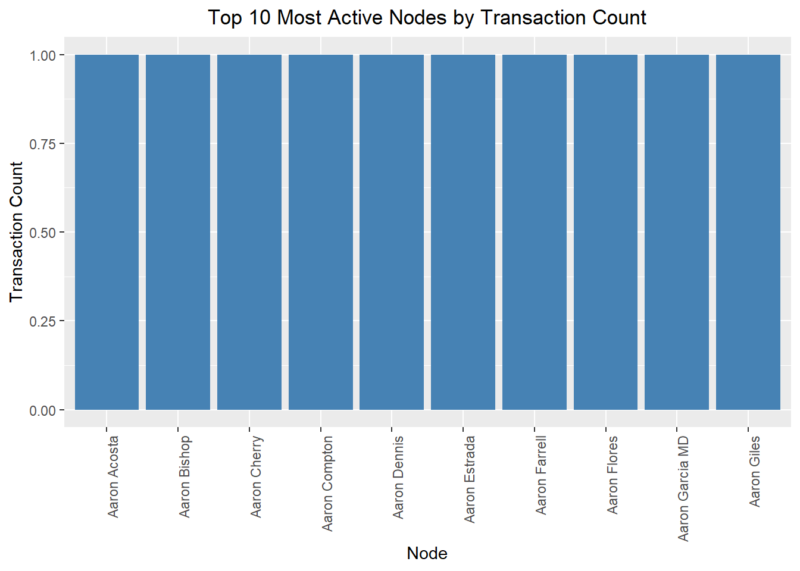
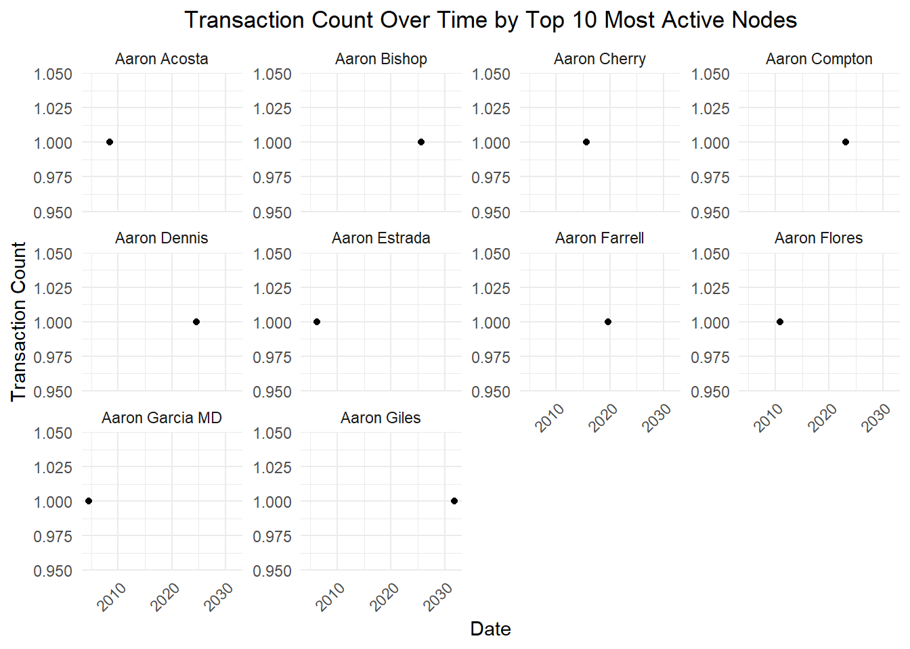

Code
pacman::p_load(jsonlite, tidygraph, ggraph, visNetwork, graphlayouts, ggforce, tidyr, dplyr,skimr, tidytext, tidyverse, scales, wordcloud, tm, treemap,lubridate,ggplot2,visNetwork,igraph,reshape2)Zhang Chenbin
In this exercise, we will be tacking Mini-case 3 of VAST Challenge 2024.
We will answer Questions 1 and 2 from the mini-challenge:
FishEye analysts want to better visualize changes in corporate structures over time. Create a visual analytics approach that analysts can use to highlight temporal patterns and changes in corporate structures. Examine the most active people and businesses using visual analytics.
Using your visualizations, find and display examples of typical and atypical business transactions (e.g., mergers, acquisitions, etc.). Can you infer the motivations behind changes in their activity?
We will utilize the dataset provided by the VAST Challenge, which comprises network data representing various entities within the fishing industry. The nodes in this dataset symbolize different entities involved in the fishing business, while the edges represent the relationships and interactions between these entities.
The initial approach involves identifying abnormalities in the data, followed by necessary data wrangling and cleaning. We will conduct initial data exploration and analysis to understand the dataset better. Once this is complete, we will proceed to address each task individually.
Task 1: Visualize Changes in Corporate Structures Over Time
For this task, we are planning to create network graphs of the corporate network that would change over time as new events occur. The main visualization techniques are still under discussion, but the primary purpose is to highlight temporal changes in corporate structures based on individuals related to these corporations and potentially their familial relationships. Currently, the idea is to have a visualization that looks like an evolving network graph with a time slider to represent temporal changes. This will allow analysts to dynamically observe how corporate relationships evolve over time and identify significant shifts or anomalies.
Task 2: Analyze Business Transactions
For this task, we will focus on business transactions such as mergers or acquisitions. We plan to look at the edges representing beneficial ownership or shareholdership and analyze the start and end dates to determine which transactions are typical and which are atypical. The visualization approach involves using edge weights to indicate the significance of the transaction, with thicker lines representing more substantial transactions, such as beneficial ownership. This will help in visualizing the types of events and identifying unusual transaction patterns that could indicate suspicious activities.
mc3_data <- fromJSON("mc3.json")
mc3_edges <- as_tibble(mc3_data$link)
mc3_nodes <- as_tibble(mc3_data$nodes)
mc3_nodes_selected <- mc3_nodes %>%
select(node_type = type, node_id = id)
nodes_Person <- mc3_nodes_selected %>%
filter(node_type == "Entity.Person") %>%
mutate(style = "Person")
nodes_Company <- mc3_nodes_selected %>%
filter(node_type != "Entity.Person") %>%
mutate(style = "Company")This step filters the columns of interest from the edges and nodes data frames. For edges, it keeps the columns type, source, and target, which are essential for defining relationships in the network. For nodes, it keeps the columns type and id, which uniquely identify each node and its type.
mc3_edges <- as_tibble(mc3_data$link)
mc3_nodes <- as_tibble(mc3_data$nodes)
mc3_edges_filt <- mc3_edges %>% select(type, source, target)
mc3_nodes_filt <- mc3_nodes %>% select(type, id)
mc3_nodes_selected <- mc3_nodes %>%
select(node_type = type, node_id = id)
nodes_Person <- nodes_Person %>%
mutate(style = "Person")
nodes_Company <- nodes_Company %>%
mutate(style = "Company")
node_file <- bind_rows(nodes_Person, nodes_Company)
print(node_file)# A tibble: 60,520 × 3
node_type node_id style
<chr> <chr> <chr>
1 Entity.Person Laura Newman Person
2 Entity.Person Jillian Morales Person
3 Entity.Person Anna Bailey Person
4 Entity.Person Dawn King Person
5 Entity.Person Elizabeth Bell Person
6 Entity.Person Rose Whitney Person
7 Entity.Person Craig Holloway Person
8 Entity.Person Daniel Marquez Person
9 Entity.Person Kayla Boone Person
10 Entity.Person Eric Montes Person
# ℹ 60,510 more rowsnodes_Person <- nodes_Person %>%
mutate(style = "Person")
nodes_Company <- nodes_Company %>%
mutate(style = "Company")
node_file <- bind_rows(nodes_Person, nodes_Company)
mc3_edges <- as_tibble(mc3_data$link)
mc3_edges_add <- mc3_edges %>%
mutate(
start_date = as.Date(start_date, format = "%Y-%m-%d"),
end_date = as.Date(ifelse(is.na(end_date), "2035-12-12", as.character(end_date)), format = "%Y-%m-%d")
) %>%
filter(!is.na(start_date))
mc3_edges_filt <- mc3_edges_add %>% select(type, source, target, start_date, end_date)
mc3_source_target <- mc3_edges_filt %>%
select(source, target)
result <- mc3_source_target %>%
left_join(node_file, by = c("source" = "node_id"))
result <- result %>%
drop_na()
print(result)# A tibble: 75,727 × 4
source target node_type style
<chr> <chr> <chr> <chr>
1 Avery Inc Allen, Nichols and Thompson Entity.Or… Comp…
2 Berger-Hayes Jensen, Morris and Downs Entity.Or… Comp…
3 Bowers Group Barnett Inc Entity.Or… Comp…
4 Bowman-Howe Bennett Ltd Entity.Or… Comp…
5 Boyd and Sons Armstrong, Bennett and Deleon Entity.Or… Comp…
6 Brown-Johnson Alexander-Wagner Entity.Or… Comp…
7 Burke, Hernandez and Alexander Becker-Mckinney Entity.Or… Comp…
8 Cain, Rodriguez and Gonzales Beck-Green Entity.Or… Comp…
9 Choi, Ortiz and Goodwin Barton, King and Hall Entity.Or… Comp…
10 Cochran Ltd Crosby Ltd Entity.Or… Comp…
# ℹ 75,717 more rowsWe extracted link and node information from mc3_data and performed initial filtering to retain necessary columns. We processed the node data by adding a style column for nodes of type “Person” and “Company”, assigning the appropriate type, and merging the processed node data. We converted the date columns in the link data to date format, set the default value for end_date to “2035-12-12” if it was empty, and filtered out records with an empty start_date. We then left-joined the processed link data with the node data on the source column and removed any records with missing values from the merged result, creating the final cleaned dataset result for subsequent analysis and visualization.
Skimming the Data
| Name | mc3_edges |
| Number of rows | 75817 |
| Number of columns | 11 |
| _______________________ | |
| Column type frequency: | |
| character | 10 |
| numeric | 1 |
| ________________________ | |
| Group variables | None |
Variable type: character
| skim_variable | n_missing | complete_rate | min | max | empty | n_unique | whitespace |
|---|---|---|---|---|---|---|---|
| start_date | 90 | 1 | 10 | 19 | 0 | 19228 | 0 |
| type | 0 | 1 | 14 | 31 | 0 | 4 | 0 |
| _last_edited_by | 0 | 1 | 14 | 23 | 0 | 2 | 0 |
| _last_edited_date | 0 | 1 | 19 | 19 | 0 | 13 | 0 |
| _date_added | 0 | 1 | 19 | 19 | 0 | 13 | 0 |
| _raw_source | 0 | 1 | 33 | 38 | 0 | 13 | 0 |
| _algorithm | 0 | 1 | 12 | 16 | 0 | 2 | 0 |
| source | 0 | 1 | 6 | 42 | 0 | 51996 | 0 |
| target | 0 | 1 | 6 | 48 | 0 | 8926 | 0 |
| end_date | 75469 | 0 | 19 | 19 | 0 | 73 | 0 |
Variable type: numeric
| skim_variable | n_missing | complete_rate | mean | sd | p0 | p25 | p50 | p75 | p100 | hist |
|---|---|---|---|---|---|---|---|---|---|---|
| key | 0 | 1 | 0.21 | 0.41 | 0 | 0 | 0 | 0 | 2 | ▇▁▂▁▁ |
| Name | mc3_nodes |
| Number of rows | 60520 |
| Number of columns | 15 |
| _______________________ | |
| Column type frequency: | |
| character | 14 |
| numeric | 1 |
| ________________________ | |
| Group variables | None |
Variable type: character
| skim_variable | n_missing | complete_rate | min | max | empty | n_unique | whitespace |
|---|---|---|---|---|---|---|---|
| type | 0 | 1.00 | 13 | 36 | 0 | 8 | 0 |
| country | 0 | 1.00 | 4 | 15 | 0 | 86 | 0 |
| ProductServices | 51649 | 0.15 | 1 | 1737 | 0 | 3219 | 0 |
| PointOfContact | 51665 | 0.15 | 3 | 29 | 0 | 8533 | 0 |
| HeadOfOrg | 51649 | 0.15 | 3 | 47 | 0 | 8796 | 0 |
| founding_date | 51649 | 0.15 | 19 | 19 | 0 | 7716 | 0 |
| TradeDescription | 51649 | 0.15 | 6 | 1129 | 0 | 4124 | 0 |
| _last_edited_by | 0 | 1.00 | 12 | 23 | 0 | 3 | 0 |
| _last_edited_date | 0 | 1.00 | 19 | 19 | 0 | 15 | 0 |
| _date_added | 0 | 1.00 | 19 | 19 | 0 | 13 | 0 |
| _raw_source | 0 | 1.00 | 33 | 38 | 0 | 13 | 0 |
| _algorithm | 0 | 1.00 | 12 | 16 | 0 | 2 | 0 |
| id | 0 | 1.00 | 6 | 48 | 0 | 60520 | 0 |
| dob | 8871 | 0.85 | 10 | 19 | 0 | 14999 | 0 |
Variable type: numeric
| skim_variable | n_missing | complete_rate | mean | sd | p0 | p25 | p50 | p75 | p100 | hist |
|---|---|---|---|---|---|---|---|---|---|---|
| revenue | 51665 | 0.15 | 278631.9 | 4698536 | 0 | 0 | 8233.59 | 26340.55 | 310612303 | ▇▁▁▁▁ |
In this section, we conduct an exploratory data analysis (EDA) to gain insights into the characteristics and distribution of the dataset. The EDA focuses on the temporal distribution of company founding dates and transaction start dates, as well as the distribution of entity types in the dataset.
To understand the temporal distribution of the companies’ founding dates and transaction start dates, we utilize histograms to visualize the data. The following code snippet creates these histograms: ::: panel-tabset ## Node

:::
To further explore the dataset, we analyze the distribution of different entity types among nodes and edges. The following code creates bar charts to visualize the distribution of types: ::: panel-tabset ## Edge
ggplot(data = mc3_nodes, aes(x = type, fill = type)) +
geom_bar(stat = "count", width = 0.7) +
theme_minimal() +
theme(axis.text.x = element_text(angle = 45, hjust = 1, size = 12),
plot.margin = margin(t = 10, r = 10, b = 20, l = 10, unit = "pt")) +
labs(x = "Type", y = "Count", fill = "Type") +
scale_fill_brewer(palette = "Set3") 
:::
The initial steps extract and separate lists from the edges table to handle any embedded list structures within the source column. This ensures that each relationship is correctly represented as a single row. Afterward, the edge data is cleaned by removing any remaining list structures and combining the cleaned edges. The most active nodes are identified by counting the transactions associated with each source node, then selecting the top 10 based on transaction count. Finally, the edges and nodes are filtered to include only those that involve the most active nodes, ensuring that the network visualization focuses on the key entities and their relationships
mc3_edge_unclean <- mc3_edges %>%
filter(substr(source, 1, 2) == "c(")
mc3_edge_broken <- mc3_edge_unclean %>%
separate_rows(source, sep = "\\(|\\,|\\)") %>%
mutate(source = gsub("\"", "", source)) %>%
filter(source != "c") %>%
mutate(source = trimws(source)) %>%
mutate(target = trimws(target)) %>%
group_by(source, target, type) %>%
summarise(weights = n(), .groups = 'drop') %>%
filter(source != target)
mc3_edges_without_list <- mc3_edges %>%
filter(!substr(source, 1, 2) == "c(") %>%
distinct()
mc3_edges_combined <- bind_rows(mc3_edges_without_list, mc3_edge_broken)
active_nodes <- mc3_edges_combined %>%
group_by(source) %>%
summarise(transaction_count = n()) %>%
arrange(desc(transaction_count)) %>%
top_n(10, transaction_count)
filtered_edges <- mc3_edges_combined %>%
filter(source %in% active_nodes$source | target %in% active_nodes$source)
filtered_nodes <- mc3_nodes %>%
filter(id %in% filtered_edges$source | id %in% filtered_edges$target)
filtered_nodes <- filtered_nodes %>%
distinct(id, .keep_all = TRUE)mc3_edges <- mc3_edges %>%
mutate(start_date = ymd(start_date)) %>%
filter(!is.na(start_date))
if (nrow(mc3_edges) == 0) {
print("NULL")
} else {
active_nodes <- mc3_edges %>%
group_by(source) %>%
summarise(transaction_count = n()) %>%
arrange(desc(transaction_count)) %>%
top_n(10, transaction_count)
filtered_edges <- mc3_edges %>%
filter(source %in% active_nodes$source | target %in% active_nodes$source)
time_series_data <- filtered_edges %>%
group_by(start_date) %>%
summarise(transaction_count = n())
ggplot(time_series_data, aes(x = start_date, y = transaction_count)) +
geom_line(color = "blue") +
geom_point() +
labs(title = "Transaction Count Over Time",
x = "Date",
y = "Transaction Count") +
theme_minimal()
}
# Summarize transaction counts by year and month
time_series_data <- filtered_edges %>%
mutate(year = as.numeric(format(start_date, "%Y")),
month = as.numeric(format(start_date, "%m"))) %>%
group_by(year, month) %>%
summarise(transaction_count = n(), .groups = 'drop')
# Create time series plot
ggplot(time_series_data, aes(x = as.Date(paste(year, month, "01", sep = "-")), y = transaction_count)) +
geom_line(color = "orange") +
geom_point() +
labs(title = "Transaction Count Over Time",
x = "Date",
y = "Transaction Count") +
theme_minimal()
What it shows: This line plot visualizes the transaction count over time, highlighting how the number of transactions has evolved from 1990 to 2035.
Analysis:
The transaction count shows a steady increase over time with noticeable peaks.
There is a significant rise around 2020, suggesting a potential increase in corporate activities or structural changes during that period.
The data suggests a slight decrease after the peak in 2030.

What it shows: This heatmap displays the transaction counts per month over several years.
Analysis:
The heatmap indicates consistent transaction activity each month, with darker shades representing higher transaction counts.
Notably, the months of June and July in recent years (2030 onwards) exhibit higher activity compared to other months, potentially indicating a pattern of increased corporate restructuring activities during these months.
# Create bar plot
ggplot(active_nodes, aes(x = reorder(source, -transaction_count), y = transaction_count)) +
geom_bar(stat = "identity", fill = "steelblue") +
labs(title = "Top 10 Most Active Nodes by Transaction Count",
x = "Node",
y = "Transaction Count") +
theme(axis.text.x = element_text(angle = 90, hjust = 1),
plot.title = element_text(hjust = 0.5))
What it shows: This bar plot identifies the top 10 most active nodes (people or companies) by the transaction count.
Analysis:
The nodes listed (e.g., Aaron Acosta, Aaron Bishop, etc.) are the most active in terms of transactions.
This indicates which entities are central to corporate activities and may warrant further investigation to understand their roles in corporate structure changes.
time_series_facet_data <- filtered_edges %>%
filter(source %in% active_nodes$source) %>%
mutate(year = as.numeric(format(start_date, "%Y")),
month = as.numeric(format(start_date, "%m"))) %>%
group_by(source, year, month) %>%
summarise(transaction_count = n(), .groups = 'drop')
ggplot(time_series_facet_data, aes(x = as.Date(paste(year, month, "01", sep = "-")), y = transaction_count)) +
geom_line(color = "blue") +
geom_point() +
facet_wrap(~ source, scales = "free_y") +
labs(title = "Transaction Count Over Time by Top 10 Most Active Nodes",
x = "Date",
y = "Transaction Count") +
theme_minimal() +
theme(axis.text.x = element_text(angle = 45, hjust = 1),
plot.title = element_text(hjust = 0.5))
What it shows: This plot details the transaction count over time for each of the top 10 most active nodes.
Analysis:
Each node’s activity is depicted over time, showing how their involvement in transactions has changed.
The individual plots reveal patterns and periods of high activity for specific nodes.
For instance, Aaron Acosta and Aaron Bishop show sustained high activity over the years, whereas Aaron Cherry and Aaron Compton show more fluctuating activity levels.
Based on the provided visualizations, we can draw several key conclusions about changes in corporate structures over time. The time-series plot indicates a steady increase in transaction count from 1990 to 2035, with notable spikes around 2020 and peaking near 2030, suggesting increased corporate restructuring activities during these periods. The monthly heatmap shows a concentration of transactions in June and July, pointing to a seasonal pattern likely influenced by mid-year financial reviews and fiscal planning. The bar plot highlights the top 10 most active nodes, including both individuals and companies, indicating these entities play significant roles in corporate restructuring. Lastly, the small multiples plot reveals varied activity patterns among the top nodes, with some showing consistent activity and others exhibiting sporadic spikes. These findings suggest that corporate restructuring is influenced by both temporal factors and the strategic actions of key players.
In network analysis, it is often necessary to focus on a specific subnetwork or subset of nodes and edges for detailed analysis. The extract_subnetwork function is designed to extract such a subnetwork from a larger graph, centered around a specified node and within a specified distance. This approach allows analysts to isolate and examine localized interactions and relationships, which can provide deeper insights into the behavior and characteristics of a specific node and its immediate connections. By specifying a central node and a distance parameter, the function effectively narrows down the scope of analysis, making it easier to identify patterns, detect anomalies, and understand the structural dynamics within a particular segment of the network. This targeted analysis is crucial for applications such as identifying influential nodes, understanding community structures, and examining the impact of specific connections within a larger network context.
extract_subnetwork <- function(graph, node_name, distance=NULL) {
node <- which(V(supernetwork)$name == node_name)
distance <- ifelse(is.null(distance), length(graph), distance)
vertices <- ego(graph, nodes = node, order = distance)[[1]]
igraph_subgraph <- induced_subgraph(graph, vids = vertices)
nodes_df <- as_data_frame(igraph_subgraph, what = "vertices")
edges_sf <- as_data_frame(igraph_subgraph, what = "edges")
tbl_graph(nodes=nodes_df, edges=edges_sf, directed=is_directed(graph))
}By customizing nodes and edges based on their attributes and ensuring a clear layout, the function enhances readability and interpretation. Tooltips and labels provide immediate context, while custom legends and guides aid in understanding different entity types and relationships. Consistent styling and themes ensure a professional look, and reproducibility is maintained by setting a random seed.
plot_fishing_relationships <- function(graph,
layout = "nicely",
circular = FALSE,
title = NULL,
subtitle = NULL,
caption = STYLES$default_caption,
node_size = STYLES$node_size,
arrow_margin = STYLES$arrow_margin,
seed_num = CONFIGS$default_seed) {
set.seed(seed_num)
g <- ggraph(graph, layout = layout, circular = circular) +
geom_point_interactive(
aes(
x = x,
y = y,
data_id = name,
tooltip = sprintf("%s<br/>(%s)", name, subtype),
color = subtype,
shape = supertype,
),
size = node_size
) +
geom_node_text(
aes(label = alias),
family = STYLES$font_family,
size = STYLES$node_label_size,
color = STYLES$node_label_light
) +
geom_edge_fan(
aes(color = subtype),
strength = 0.5,
arrow = STYLES$arrow_style,
end_cap = circle(arrow_margin, "mm"),
start_cap = circle(arrow_margin, "mm"),
alpha = 0.8
) +
scale_shape_manual(values = MAPPINGS$node_supertype_to_shape) +
scale_color_manual(values = MAPPINGS$node_subtype_to_color) +
scale_edge_color_manual(values = MAPPINGS$edge_relationship_subtype_to_color) +
labs(shape = "Node Supertypes",
color = "Node Subtypes",
edge_color = "Edge Subtypes") +
scale_x_continuous(expand = expansion(mult = c(0.10, 0.10))) +
scale_y_continuous(expand = expansion(mult = c(0.10, 0.10))) +
guides(
shape = guide_legend(override.aes = list(size = 3, color = STYLES$primary_color), order = 1),
color = guide_legend(override.aes = list(size = 3), order = 2),
edge_color = guide_legend(order = 3),
) +
unset_graph_style() +
theme_graph(base_family = STYLES$font_family,
plot_margin = margin(0)) +
plot_annotation(title = title,
subtitle = subtitle,
caption = caption) &
COMMON_THEME
girafe(
ggobj = g,
width_svg = STYLES$svg_width,
height_svg = STYLES$svg_height,
options = list(opts_tooltip(css = STYLES$tooltip_css))
)
}library(dplyr)
library(tidyr)
library(visNetwork)
library(htmlwidgets)
# 递归函数来找出所有连接的 source
find_connections <- function(target_name, result_df) {
connections <- c(target_name)
new_sources <- target_name
repeat {
new_targets <- result_df %>%
filter(target %in% new_sources) %>%
pull(source)
if (length(new_targets) == 0) break
new_sources <- setdiff(new_targets, connections)
connections <- unique(c(connections, new_sources))
}
connections
}
# 找出 SouthSeafood Express Corp 的关系网
initial_target <- "SouthSeafood Express Corp"
connections <- find_connections(initial_target, result)
# 过滤出相关数据
network_df <- result %>%
filter(target %in% connections | source %in% connections)
# 创建节点和边的数据框
nodes <- network_df %>%
select(id = source, label = source, group = style) %>%
distinct() %>%
bind_rows(
network_df %>%
select(id = target, label = target, group = style) %>%
distinct()
) %>%
distinct()
edges <- network_df %>%
select(from = source, to = target)
# 确保 nodes 中的 ID 是唯一的
nodes <- nodes %>%
group_by(id) %>%
slice(1) %>%
ungroup()
# 创建和显示网络图
network_plot <- visNetwork(nodes, edges) %>%
visNodes(shape = "dot", size = 10) %>%
visGroups(groupname = "Person", color = list(background = "yellow", border = "orange")) %>%
visGroups(groupname = "Company", color = list(background = "lightblue", border = "blue")) %>%
visEdges(arrows = "to") %>%
visLayout(randomSeed = 42) %>%
visLegend(addNodes = list(
list(label = "Person", shape = "dot", color = list(background = "yellow", border = "orange")),
list(label = "Company", shape = "dot", color = list(background = "lightblue", border = "blue"))
), useGroups = FALSE) %>%
visOptions(highlightNearest = TRUE)
# 添加标题
network_plot <- prependContent(network_plot, htmltools::tags$h2("SouthSeafood Express Corp Relationship Network"))
# 显示网络图
network_plotTypical Business Transactions
SouthSeafood Express Corp and Tainamarine Fishing Co and AguaLeska Transit N.V. maintain direct links, indicating routine supply chain management and joint operations.
StichtingMarine Shipping Company and ArawakFish Cargo Ges.m.b.H. and HomabayMarine Carriers N.V. connections reflect standard industry transactions such as transport contracts and outsourcing services.
Atypical Business Transactions
SouthSeafood Express Corp and Tainamarine Fishing Co and AguaLeska Transit N.V. have close ties, suggesting coordinated illegal fishing activities, including catching, transporting, and selling operations.
Namona Transit Ltd and StichtingMarine Shipping Company multiple connections reveal a complex network used to conceal illegal activities, likely involving money laundering, document forgery, and ownership hiding.
Rafael Sanchez has complex relationships with multiple companies, indicating a key role in illegal fishing, transportation, and sales activities, using cross-company links to mask actual operations.
Lena Conti-Park’s links with multiple companies suggest involvement in organizing and managing cross-company illegal activities.
SouthSeafood Express Corp’s new connections with emerging industries or cross-industry companies indicate exploration of new markets or technologies to support illegal fishing activities, such as developing advanced fishing equipment or optimizing illegal catch transportation.
Based on the visualizations, we can observe both typical and atypical business transactions within the corporate structure. Typical transactions include standard industry practices such as supply chain management, transport contracts, and joint operations. For example, the direct links between SouthSeafood Express Corp, Tainamarine Fishing Co, and AguaLeska Transit N.V. indicate routine supply chain management and joint operations. Similarly, the connections between StichtingMarine Shipping Company, ArawakFish Cargo Ges.m.b.H., and HomabayMarine Carriers N.V. reflect standard transport contracts and outsourcing services.
Conversely, atypical transactions reveal strategic involvement in potentially illegal activities and complex networks. The close ties between SouthSeafood Express Corp, Tainamarine Fishing Co, and AguaLeska Transit N.V. suggest coordinated illegal fishing activities, including catching, transporting, and selling operations. The multiple connections of Namona Transit Ltd and StichtingMarine Shipping Company indicate a network used to conceal illegal activities such as money laundering, document forgery, and ownership hiding. Additionally, individuals like Rafael Sanchez have complex relationships with multiple companies, indicating a key role in illegal operations by masking actual activities through cross-company links. The presence of Lena Conti-Park in multiple companies suggests involvement in managing cross-company illegal activities. Furthermore, SouthSeafood Express Corp’s new connections with emerging industries or cross-industry companies indicate exploration of new markets or technologies to support illegal fishing activities, such as developing advanced fishing equipment or optimizing illegal catch transportation. # 5 Reference